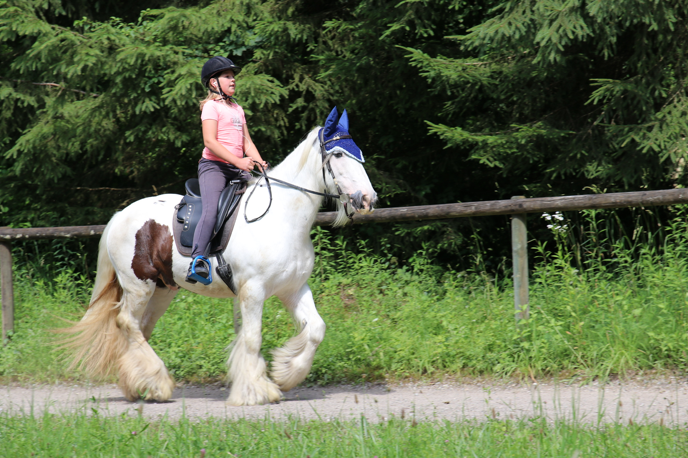

Fred und Ich
Rassebeschreibung
Ursprungsland:
Irland, England
Grösse: ca. 130cm – 170cm (der Durchschnitt dürfte so bei 145 – 155cm liegen)
Farbe, Scheckung: Es gibt alle Farben und Scheckungsarten. Am häufigsten ist der Tinker schwarz/weiss gescheckt. Es gibt aber auch einfarbige Tiere.
Die Augen sind meist dunkel, aber auch blaue Augen kommen vor. Dies ist jedoch weder ein Mangel noch eine Beeinträchtigung. Diese Tinker sehen genauso gut.
Körperbau und Gangarten: Das Tinkerpferd ist kompakt, kraftvoll und stattlich in der Erscheinung. Der Körperbau ähnelt sehr den Kaltblut- und Zugpferden. Eine Breite Brust, ein kräftiger Hals mit einem mächtigem aber im Vergleich zur Breite oft eher kurzem Kopf, eine sehr geringe Ganaschenfreiheit , wenig Widerrist, ein tonniger Rumpf, ein zum Teil sehr kurzer Rücken, eine steile Hinterhand und eine gespaltene Kruppe zeigen dies deutlich. Je nach Typ, treten dabei Merkmale von Pony, Warmblutpferd und Kaltblutpferd mehr oder weniger deutlich hervor.
.
Bilder

Ich mit Fred auf der Ovalbahn